Quick vid of the robot working with the headband:
The point of this robot idea is to be able to create an automated system, and do some sort of task that you give it.
This is one of the modules for my final project — the drive module.
It folds up into a cube, and when you unlock the top, it folds outwards. The green ‘fin’ pieces are pretend solar panels, so this is how the robot could power itself.
The four sides will eventually have a way to connect with other robots, so it can form a cluster to perform the tasks.
The dimensions are based around a 1u CubeSat (10x10x10cm). I figured that if my robots will be helping on our planet (Earth), why not future-design them for space and other planets too.
What makes this robot idea different than others similar to it (modular robots, for example) is a a combination of the purpose which inspires design decisions, and eventually the way user interaction will play in configuring the behaviour.
I’m imagining these robots being able to be packed into a backpack for transport, and then deployed during a natural disaster to help with some task so that humans can work on something else. Stay tuned to the Final Project page for more details.
Started out with a quick design that re-used some older flexible pieces, and placed everything temporarily together with hot glue just to make sure the dimensions and folding would work. Made some modifications and printed the updated pieces:
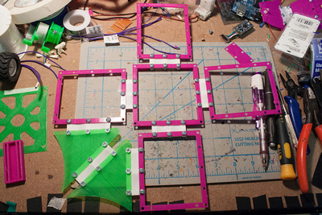Using gear motors for the wheels. They’re attached with a big glob of hot glue to a 3d printed piece, which is then attached with screws to a mounting plate. The mounting plate then attaches to one of the side faces.
Top left: There is one motor that is tempermental because of its tab sort of falling off and there isn’t much room to attach a wire too
Top right: There are encoders on the wheels — ir reflectance sensors measuring tabs on the wheel hubs. Not using them yet. I’m debating going with a hall effect sensor. Benefit of the magnets+sensor would be that they would continue to work in dusty environments.
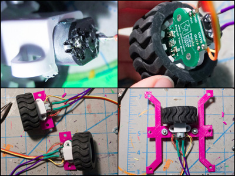Added some plates to the center of the robot, for holding the battery, the board, and the cover on top of it.
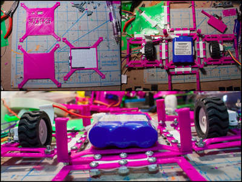Ran into the first problem. When the sides with the wheels fold up, they run in to the plates. Fixed it by increasing the height of the bars lifting the board plate.
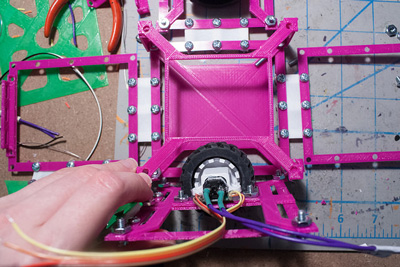Here’s what it looked like when all of the pieces finished printing and was partially assembled. You can see to the right the board is being worked on too:
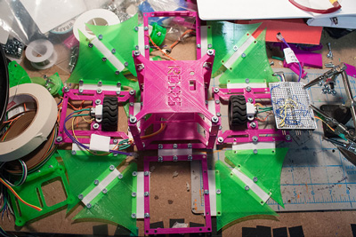Here is what the “board” looks like. It is boring; just an Arduino Pro Mini, L293D motor driver, some resistors for the leds, and a lot of headers for plugging in the connections to the motors and such. This takes so long compared to if I could mill it...... :/
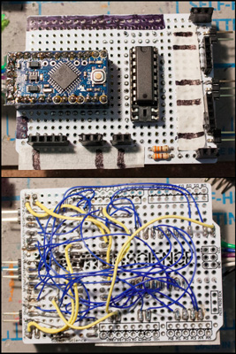Although the smoke test was fine and the led blinked, there was a problem. It just seemed like everything wasn’t working properly. Can you see the small mistake?
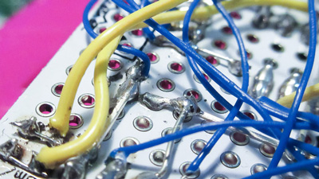The connection wasn’t soldered over completely!
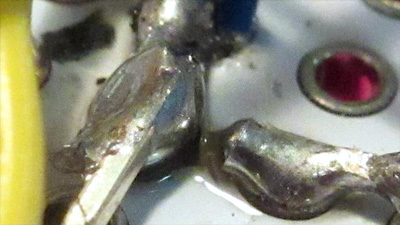Fixed it:
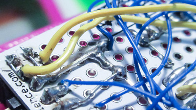This was another weird mistake that I made when soldering. I don’t really know how this happened. The wire wasn’t attaching to the solder, then when I flipped the board over it looked like this. Easy to fix, but still pretty weird:
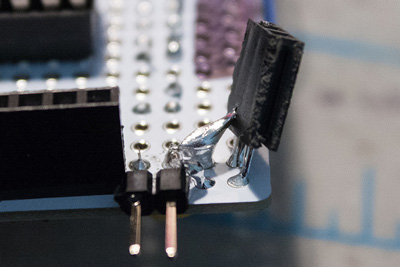Everything was assembled together, all the screws added too. Here’s what the robot looks like when folded up:
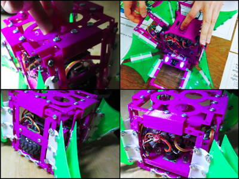Here’s what it looks and sounds like when unfolding (the sound is kinda cool):
Vid:
Here is a little demo of the distance sensor in action:
Vid:
The battery that was shown in some of the pics is a 2200 mAh Li-Ion 11.1V. It was not able to power the robot. Whenever the motors would turn on, the controller would brown out. The batt used to be used for my hockey humanoid, which used more power than this.
Need to go back and investigate this. My first guess is because it is aging (batt is 6 years old), however it could also be because it might be running through a voltage regulator on the arduino pro mini that limits the current. It works fine when powering through usb, which does not have a regulator. So I have to go back and check this (or at least, keep it in mind for when designing the board base).
I learned a valuable lesson from a master robot builder about the types of screws used in my robot design.
First of all, the 6-32 is too large for the robot. Can get away with something smaller. But, there were various types of screws that I used. Ones were button / flat heads, and there were others that were countersunk.
The problem with countersunk screws is that they want to keep digging in to the material. So it is essentially stretching out some of the material around the hole in my designs.
Since my pieces are rather thin and flimsy, it is possible that with a countersunk screw, it could have added some warping or distortion to the piece. Which then causes a difference when it is folding back up to attach to the top piece.
The bigger lesson learned here is that you should always care about *everything* that goes into the construction of your robot, even the small things like the screws.
The green ‘fins’ (aka, pretend solar panels) were supposed to fold inside of the robot. Didn’t take into consideration the dimensions of the screws and nuts, so it did not fold completely flush.
Didn’t check the soldered glob if it was connected properly when soldering it together
Didn’t really take into account the folding of the sides into the main area of the robot
Need to create some sort of folding spec, for when the sides fold into the main area. There should be a max length and width with a max height on the side, and the main area should be able to accept this in its design too
Check the thing that you are soldering before moving on to the next thing
Having many metal screws on your robot makes it surprisingly heavy
Making robot drive in a straight line / wheel sensors— use magnets + hall effect sensors?
The dimensions of the flexible pieces- do they fold as a perfect corner? All the time? Or is it sometimes on an angle? What should it be?
How can an end-effector unfold from such a design
What could be the max power harnessed from the size of the ‘solar panels’?
This was cool for a first start. But there’s so much more work to go.
Is there a way to make the flexible pieces as laser cut flexures? Would this be stronger or not as strong?
It would be neat if there was some sort of spring-loaded lock that could make the sides not bow with the weight of the main area, when it is unfolded. (So it wouldn’t be dragging on the ground as the wheels are moving)
Need to design a way for the top piece to connect with the sides, and that connector on the sides be able to be used for aligning a connecting robot.
The whole top piece needs fixing.
Need to make sure the dimensions comply with CubeSat standard.
The board should be one ‘level’ in the main area of the robot.
Similar to the curl mech pt 2, can use a bar that goes across the flex piece, instead of 3 screws.
My idea for integrating it with the headband is that the headband will be used to give feedback to the robot by nodding or shaking your head. This would let the human give feedback to the robot if it does a step of the automation wrong. The robots would then take that feedback and go back and recalculate what it should be doing. Not sure if I’ll be able to get this done in time for demo day though.